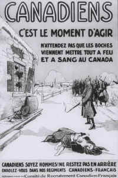
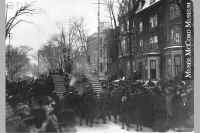
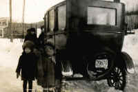
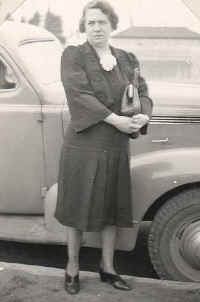

|

THEIR LIFE AND TIMES
 Marie-Anna Caron marries Rosario
Charette on January 16, 1917, in the parish of St-Zotique in Montréal. Both of them
are minors. Marie-Anna Caron marries Rosario
Charette on January 16, 1917, in the parish of St-Zotique in Montréal. Both of them
are minors.
It is a simple wedding, since Rosario is
in mourning for his father, Alphonse Charette Jr., who died the previous July 9. He
has also lost his mother, Marie Lavoie, who died on November
19, 1914. She was only thirty-nine and is said to have died of a contagious disease
caught while nursing one of her children (Gérard's
recollection).
Rosario
was born on January 20, 1897, at 1096 St-Antoine, St-Henri.
He and Marie-Anna marry so young no doubt because, having no family left,
he is in a hurry to start his own.
All he has left
is a fifteen-year-old younger brother, Alexandre. His other brothers and sisters did not reach
adulthood, having died very young in epidemics. Perhaps, too, he wants to escape conscription, which
is said to be imminent.
 The
young couple simply moves into the house of Rosario's parents, furniture and all,
at 1121 St-Antoine. Alphonse Charette Jr. and his
family had moved into this property in 1907 and
lived there until their deaths. It
is reasonable to think that Alexandre lived with the newlyweds;
otherwise he must have been taken in by his guardian, surely one of his
uncles, or his grandfather Alphonse Charette Sr.? The
young couple simply moves into the house of Rosario's parents, furniture and all,
at 1121 St-Antoine. Alphonse Charette Jr. and his
family had moved into this property in 1907 and
lived there until their deaths. It
is reasonable to think that Alexandre lived with the newlyweds;
otherwise he must have been taken in by his guardian, surely one of his
uncles, or his grandfather Alphonse Charette Sr.?
Rosario received a
good inheritance from his father, Alphonse Jr., but, being a minor, he has to deal with
two uncles who were named testamentary guardians. Subject to confirmation,
these uncles would be Aldéric Lavoie and Ernest Charette.
According to
Fleurette Lavoie, Rosario's cousin, he and Marie-Anna "made a handsome
couple". There is no doubt that Rosario loves his wife dearly, and he will
treat her "like a queen" all his life.

Through the
Lovell directories* we can follow Rosario's family,
and also learn what he did for a living.
From 1917 to 1919 the young
couple lives at 1121 St-Antoine; Rosario is listed as ice mcht.
From 1919 to 1923 they live at 444 Ste-Émélie, diagonally across from
Marie-Anna's mother, Alphonsine, who lives at 455
Ste-Émélie. Rosario's occupation is listed as mech.
From 1924 to 1926 they live at 284 St-Philippe.
From 1926 to 1928 they are at 266 St-Philippe. Rosario is listed as wood &
coal 1117 St-Antoine. 1117 St-Antoine is right at the corner of
St-Philippe, on the site of the garage Rosario will later
have built.
In 1928, when the city changes the street numbering,
266 St-Philippe becomes 910 St-Philippe.
|

EVENTFUL TIMES
Marie-Anna and Rosario marry at a rather stormy time; we must not forget that the First World War
is raging in Europe. The year 1916, which has just
ended, was an eventful one.
The dragging on of the war and
the fear of conscription lead to a scuffle on
Place d'Armes in Montréal on August 24, 1916. Tempers flare and
turn a recruiting meeting into an anti-conscription demonstration.
The recruiting soldiers withdraw as the scuffle comes close
to turning into a riot. The recruiting session is suspended
to avoid the worst.
|

A 1916 poster recruiting
French Canadians
|

A tank "on display" on Sherbrooke
Street in Montréal in 1916, to encourage recruits to enlist
|
Anti-conscription demonstration in Montréal
in 1917
|
August
29, 1917. Conscription. Under pressure to step up the war effort
Canada had promised Great Britain, and no longer able to manage it
with volunteers alone, Robert Borden's Conservative
government has the Military Service Act passed by the
House of Commons, 101 votes to 44, on July 24, 1917. It is
mainly Liberals, including their leader Wilfrid Laurier, who
oppose the measure. It is fairly well received
across the country, except in Quebec, where it
sparks several stormy demonstrations. With
the Senate's approval, obtained on August 29, 1917, the new
law comes into force.
The law is very broad and covers all able-bodied men from
18 to 60 (in case such a large pool of
recruits should be needed), but at first it targets
young men. It is soon followed by a proclamation
ordering single men aged 20 to 34 to enlist.
Penalties are set for those who disobey the
new law. This does not stop a violent demonstration
in Montréal two days later. Many policemen
go to the scene to calm the protesters. The
next day another clash causes a death.
January 13,
1918. Lomer Gouin's Liberal government (Province of Quebec)
passes a decree allowing women and girls
to work nights in factories to support the war
effort.
February 28,
1918. Robert Borden's (federal) Union government
puts the War Income Tax Act into effect. It allows it
to raise the tax rate of everyone subject to
regular income tax. The federal government hopes to
raise 15 to 20 million dollars this way. The tax was supposed
to last only for the duration of the war, but it is still with us.
April 1,
1918. In Quebec City, soldiers charge a group of
demonstrators who have been protesting against conscription for five days.
The soldiers, firing machine guns, kill
five demonstrators and wound 70 others.
April 22,
1918. Monday morning, 6 o'clock, at 1121 Saint-Antoine: birth of
Marie Thérèse Marguerite Rosianne , first child of Rosario
Charette and Marie-Anna Caron. Her godparents are
Alphonse Charette Sr. and Rosianne Miron, her paternal great-grandparents.
The porteuse (the woman who carries the baby to the font) is "Mde Z. Laframboise, grand-mère",
that is, Alphonsine. She is baptized by Father Paiement at Saint-Henri church.
(source:
a little notebook in which Marie-Anna recorded the births)
September
29, 1918. Fearing communism, which is gaining
ground in the wake of the Bolshevik revolution of October
1917,
Robert Borden's Union government makes
membership in 14 «leftist» organizations
considered illegal, including the Socialist Party and the
Social Democratic Party, punishable by fine or imprisonment.
October
1918. A terrible epidemic of (Spanish) flu sweeps
across America from October 1918. Brought to Canada
by soldiers returning from Europe, it spreads quickly and
forces the authorities to take
exceptional measures. The health department orders schools,
cinemas, theatres and all public places
closed. Panic grips the population; the death knell
tolls day and night, there are so many dead to bury.
Rosario
surely fears for his young family, having lost his mother,
brothers and sisters in epidemics early in the century.
April 25, 1919. Alphonse
Charette Sr., Rosario's grandfather,
dies suddenly. We can imagine it is a
great loss for Rosario, since his grandfather had
surely taken his father's place and he could count on his
support and advice.
His grandfather's presence
and authority probably protected him. Later,
one of his uncle-guardians is said to have deprived Rosario and his
brother of part of their inheritance. The family still talks
about "Ernest le croche" (Ernest the crook)... But those
are family stories... impossible to check so long
afterwards, although some will say "there's no smoke without fire".
December
15, 1919. Sunday, around midnight, at 444 Ste-Émélie, Rosario and Marie-Anna have their
first son, Joseph Léo Fernand Benoît. His godparents
are Zénon Laframboise and Alphonsine Gagnon, his maternal grandparents. The
porteuse (the woman who carries the baby to the font) is Mrs. S. Bédard, a great-aunt. He is baptized by Father
Potvin, curate at St-Zotique church. (source:
a little notebook in which Marie-Anna recorded the births)
October 19, 1921. Wednesday, around 3 o'clock in the morning, at 444
Sainte-Émélie: birth of Joseph Jean Paul Gérard. His godparents
are Jean Caron and Nellie Villemaire, his uncle and
aunt. The porteuse is "Mde Z. Laframboise, grand-mère",
that is, Alphonsine. He is baptized by Father Potvin at Saint-Zotique church.
(source:
a little notebook in which Marie-Anna recorded the births)
June 28, 1923. Thursday, at 9 o'clock in the evening, at 284 St-Philippe: birth of
Joseph Armand Rosario Alphonse. In fact he will go by the name Rosaire. His godparents
are Aldéric Lavoie and his wife, his great-uncle and great-aunt.
The porteuse is "Mme Lavoie arrière-grand-mère" (great-grandmother), that is,
Anastasie Lortie-Lavoie, Rosario's maternal grandmother. He is baptized
at St-Henri church.
(source: a little
notebook in which Marie-Anna recorded the births)
In 1924, on August 13, Rosario suffers another bereavement. His only
brother, Alexandre, dies in a car
accident.
Alexandre, born on October 2, 1901,
is single. He is studying pharmacy, a brand-new
faculty at the Université de Montréal. That day he and Rosario are coming back from who knows where. The two brothers
argue because Alexandre wants to go and get money from their uncle
Aldéric, one of the uncles managing their
inheritance, but Rosario refuses
to go with him. He gets out of the car and walks home. Alexandre drives on
alone and has an accident in
which his car goes into the Lachine Canal. (Story
passed on by Ghislaine, who heard it from Rita and
Fleurette Lavoie, Rosario's cousins)
Rosario will always
have doubts about this accident. His
children remember (Gérard's recollection) hearing their
parents wonder whether it might have been suicide. |

Rosario and Marie-Anna's family, winter
1926
(Marie-Anna is expecting Jean-Noël)
July
26, 1926. Monday, half past five in the morning, at 266 St-Philippe:
birth of Joseph Jean-Noël. His godparents are Joseph and Clara
Alexander, his great-uncle and great-aunt. The porteuse is Nurse
Viau. He is baptized at St-Henri church. (source:
a little notebook in which Marie-Anna recorded the births)
For each birth
Rosario gives Marie-Anna a present. For Jean-Noël's she
receives a grandfather clock.
 1926
is also the year the Rosario Charette family
moves to 266 St-Philippe, which will become no. 910 when the street numbers
change in 1928. They
live on the ground floor of this three-storey building
for more than ten years. Rosario rents out the upper
floors. It is very close to
the corner of St-Antoine, where Rosario works. He is said to have
owned several other buildings as well. 1926
is also the year the Rosario Charette family
moves to 266 St-Philippe, which will become no. 910 when the street numbers
change in 1928. They
live on the ground floor of this three-storey building
for more than ten years. Rosario rents out the upper
floors. It is very close to
the corner of St-Antoine, where Rosario works. He is said to have
owned several other buildings as well.
They often go to the
country to see relatives or friends who have a cottage. They also rent
cottages themselves for the holidays. The family also goes to the
Saguenay to visit Marie-Anna's relatives. One of them
had multiple sclerosis, and Rosario is said to have built a sort of
wheeled cart so he could get around (Story
passed on by Ghislaine, who heard it from her family).
Rosario loves
cars and changes them often. He gets that from his father and his
grandfather Charette. As soon as cars came on the market,
they bought some, and even took part in the
first Montréal-New York rally (on dirt roads) early in the
century.
|

Rosario, Thérèse and Benoît
|
 :
Thérèse, Benoît, 1924
|

Rue St-Philippe,
Gérard, Benoît, Jean-Noël
|
In November 1928 Rosario files plans at Montréal City Hall
for a garage he wants to build at 4271-4277
St-Antoine, at the corner of St-Philippe, in St-Henri. Note that this
same year the street numbering changes and
1117 St-Antoine becomes 4271, still at the corner of
St-Philippe.
In 1929 Rosario has the
buildings torn down to build his business, the Garage Philippe. (The
Lovell* directories for this
period no longer list any building on St-Antoine at the corner of
St-Philippe.)
In the 1930 Lovell* directory, the Garage Philippe appears for the first time at 4271
St-Antoine, corner of St-Philippe. Rosario is clearly identified as the owner.
Until 1938 we find "Charette R prop Garage Philippe 910 St-Philippe".
|
   
   |
|

Garage
Philippe, Rosario's garage
|

The garage in 2006, photo by David
|
THE "GARAGE PHILIPPE", A MODERN GARAGE
The garage's gas pumps
are open
24 hours a day, 7 days a week. The garage has four floors; cars are taken
up to the floors by elevator. That is where Rosario's young sons
learn to drive. Rosario's employees
enjoy letting
the boss's sons drive the cars into and out of
the elevator (Gérard's
recollection).
Rosario's bookkeeper is Henri Philippe, who is also one of his
tenants. His wife, Imelda Verreault, is a good
friend of Marie-Anna's. Their daughter Rachel will marry Rosaire, Rosario's
son. Imelda later testified that Alphonse father and son, and so Rosario
by inheritance, owned many properties in St-Henri. (account
received by Ghislaine)
At 4277 St-Antoine (part
of the garage's ground floor)
Rosario rents a shop from the start, until 1939, to
Napoléon Lapierre, who, though
he lives in L'Abord-à-Plouffe,
sets up his shoe-repair shop there.
|
In 1929,
on October 12, Marie-Anna loses her mother,
Alphonsine Gagnon.
On October 24, 1929, Black
Thursday, comes the stock market crash that sets off
a severe worldwide economic crisis.
Rosario builds his business all the same. But
financially harder years lie ahead for him; it seems
he is poorly advised and is not the shrewdest
businessman. He does not have a "head for business", and he is very
generous with everyone.
In 1931, on March 26, Marie-Anna gives birth to a "stillborn
child", a
girl.
(source: a little notebook in which Marie-Anna recorded the births)
In 1935, on
April 26, Rosario's grandmother,
Rosianne Miron, widow of Alphonse Charette Sr., dies. She was the last
pillar and the centre of the great Charette family of Saint-Henri.
|


|
Rosianne
gathered many children, grandchildren and
great-grandchildren around her. Her big stone house, built
by her husband at 4230 St-Antoine, had seen countless
family gatherings to mark happy or
sad occasions.
The basement was set aside
especially for these gatherings; there was even a
kitchen fitted out for receptions.
Several people played the piano and
other instruments, and everyone had a good time
at these parties. They sang, danced and played cards.
(Story
passed on by Ghislaine, who heard it from Rita and Fleurette Lavoie,
Rosario's cousins)
|
October 3, 1935, Thursday night, at Ste-Jeanne d'Arc hospital: birth of
Marie-Anna Françoise Ghislaine, the last child of Rosario
and Marie-Anna. Her godparents are Benoît and Thérèse
Charette, her brother and sister. The porteuse is Mrs. J. Caron,
that is, her aunt Nellie, Jean Caron's wife. She is baptized by
Father Potvin at Ste-Jeanne-d'Arc hospital. (source:
a little notebook in which Marie-Anna recorded the births)
We can assume that, after the stillbirth
a few years earlier, and perhaps also given
Marie-Anna's age, she chose to give birth in
hospital this time. Rosario can afford the cost, and no doubt
hopes in this way to avoid any complications for mother and
child.
 In
the late 1930s Rosario is ill;
his son Jean-Noël remembers a home nurse
putting cupping glasses on his father's back as he leaned over the
living-room piano. What illness does he have,
exactly? Ghislaine remembers always
hearing that her father had a "coeur de boeuf" (an ox heart),
a heart problem that kept him from heavy physical
exertion. In
the late 1930s Rosario is ill;
his son Jean-Noël remembers a home nurse
putting cupping glasses on his father's back as he leaned over the
living-room piano. What illness does he have,
exactly? Ghislaine remembers always
hearing that her father had a "coeur de boeuf" (an ox heart),
a heart problem that kept him from heavy physical
exertion.
Rosario rents out his whole garage for $100 a month,
no longer able to run his business. Shortly afterwards, his
tenant sublets each floor for $500 a month to
the Canadian army! Rosario "takes it personally"
(Jean-Noël's recollection), that is, he sees it as
proof of his incompetence in business. This financial loss, on top
of others, undermines the discouraged Rosario's morale and deals him a
fatal blow.
From the Lovell* directory for
1939-1940 we learn that Rosario sells 910 St-Philippe to
"Ménard Vic et Daoust Miss
Cecile" and that he moves into a rented flat at 339
St-Philippe.
4271 St-Antoine has become the Garage Bessette, which suggests
that Rosario sold his garage before his
death, the buyer, Mr. Bessette, probably being the man who had
first rented the garage a little earlier.
Rosario
dies on May 21, 1940, at the age of 42.
His cousin Yolande Lavoie, who has just finished her nursing course, is at his bedside
the night he dies. She had
looked after Rosario in his last days, and also Marie-Anna, sorely
tried by her husband's illness, and the youngest
children. (Story
passed on by Ghislaine, who heard it from Rita and Fleurette Lavoie,
Rosario's cousins)
 This death is a shock to the whole family. Benoît, the eldest
son, supports his mother as best he can. He takes her on a trip
to Ottawa in the summer of 1940, no doubt to "take her mind off
things". (photo
opposite). They also go to see the
Dionne quintuplets (Ghislaine's recollection).
Marie-Anna must take advice and plan her
finances for her own future and her family's. Her
youngest is not yet five and her sons are still in school; as for
herself, she has no work experience.
So she must see to it
that the inheritance she receives from her husband is managed
so that it can provide for her needs for the rest of her
days.
* The
Lovell directories cover July 1 of one year to June 30 of
the next. The information was gathered door to door in May. In
some directories, owners are marked with an asterisk.
The occupation is often listed, as is the employer. You can
search by the person's name or by address. They are
available on the website of the Archives
nationales.
|